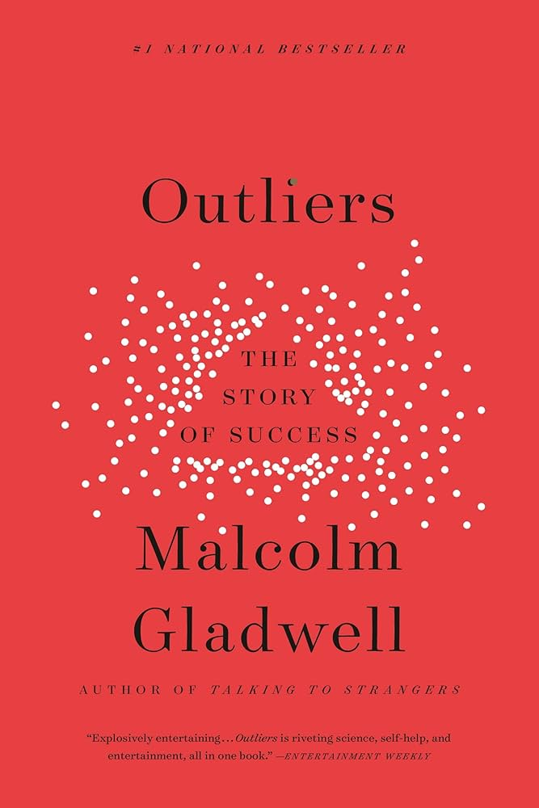
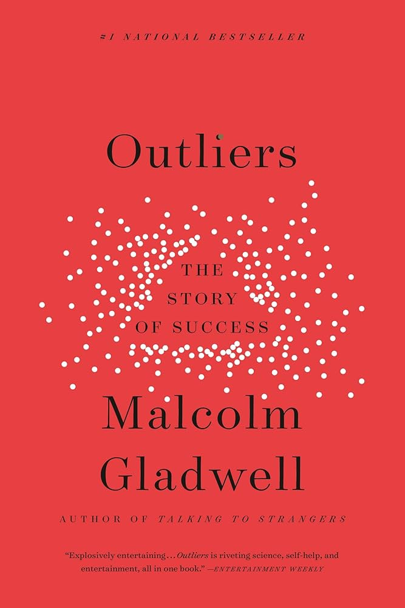
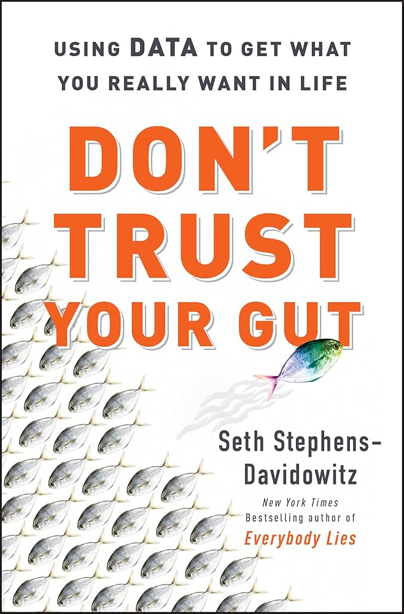
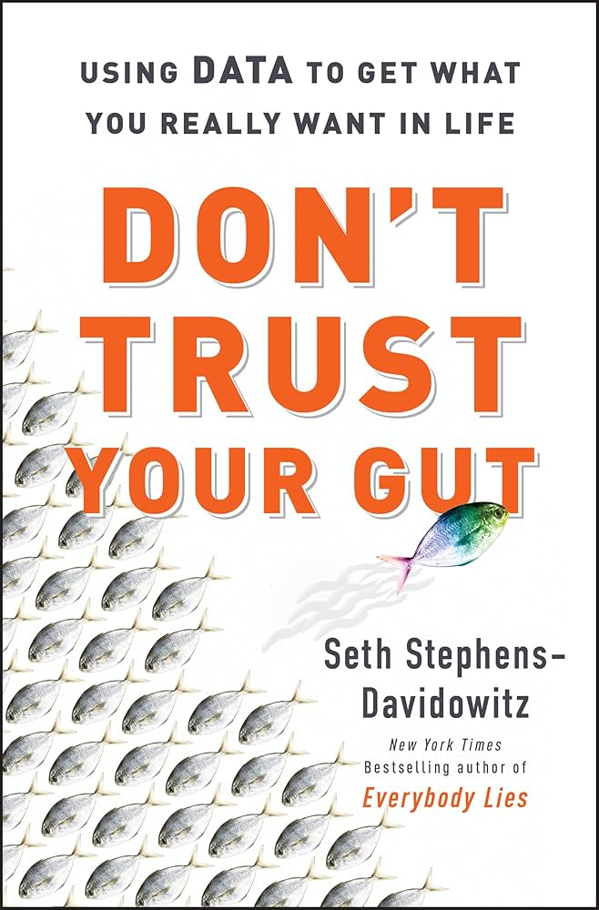

I am currently a Machine Learning Engineer at WeRide, working on the WePilot AiDrive system. My focus is on exploring Vision Language Models to overcome the limitations in understanding driving intent and human interaction.
Previously, I interned as a software engineer at Momenta, where I contributed to the autopilot reversing feature for GM Cadillac LYRIQ, reducing false positives by 15% on 800+ real parking test cases across 30+ garages.
I earned my master’s degree in the Department of EECS at UC Berkeley in 2025 -- Fiat Lux and Go Bears, and my B.E. in Computer Science from Shanghai University in 2024.
My passion for the intersection of computer vision, AI, and robotics began in high school, where I led a team in the FIRST Tech Challenge. From 2017 to 2020, we earned 2 FIRST World Championship qualifications, 1 Inspire Award, and 4 Connect Awards.
In RoboMaster competition from 2020 to 2024, I co-led the computer vision subteam and later served as overall lead of a 40-member squad, where we built eight types of robots from scratch and won 3rd place in the Shanghai Regional Competition. I am graciously to be an alumnus of both RoboMaster and FIRST, and affiliated with DJI as an event technical executive.
"What motivates the development of AI must explicitly center on human benefit." -- Fei-Fei Li
[2024/04/02] Head Referee at DJI RoboMaster 2024 Shanghai Regional Competition
[2024/01/27] Lead Robot Inspector at 2023-2024 FIRST Tech Challenge Shanghai Qualifier
[2021/05/14] Referee at 2020-2021 FIRST Tech Challenge Hangzhou Qualifier
[2020/09/20] Robot Inspector at 2019-2020 FIRST Tech Challenge Shanghai Offseason Event
[2024/04/02] Invited talk at DJI RoboMaster 2024 Shanghai Regional Competition.
[2023/05/11] Invited talk at Shanghai University Institute and Entrepreneurship.
[2023/04/26] Invited talk at DJI RoboMaster 2023 Shanghai Regional Competition.
[2023/03/30] Invited talk at Shanghai University Ziqiang College.
[2018/06/05] Invited talk at Junior Edison TV Show.
[2023/08/20] First Prize of Sentry Robot at RoboMaster 2023 National Finals
[2023/04/23] Third Place at RoboMaster 2023 Shanghai Regional Competition
[2019/04/28] Admission at 2019 FIRST World Championship, Houston
[2018/06/01] Connect Award at 2017-2018 FIRST Tech Challenge China National Finals
[2018/04/28] Admission at 2018 FIRST World Championship, Detroit
[2018/03/25] Inspire Award at 2017-2018 FIRST Tech Challenge Shanghai American School Qualifier
I love walking by the ocean, soaking in the sea breeze, and watching the sunsets. The beaches in La Jolla and Berkeley always leave me feeling refreshed and inspiring.


Bookshelf
 



 

|
|